← 返回模拟电子学
第1节：电流、电压和电阻 Current, Voltage and Resistance
认识电 Introducing electricity
电是日常生活中最重要的能量形式之一。我们身边的各种设备 — 手机、电脑、供暖系统 — 都依靠电路才能工作。在本节中，你将学习电路如何工作，以及电路中的几个关键物理量。
电路（electric circuit）是由电池、灯、开关和导线等元件组成的闭合回路（closed loop）。只有当电路完整（闭合）时，电流才能流动。
三个关键物理量 The three key quantities
电流 Current
电流是带负电的粒子——电子（electrons）——的流动。在工程科学中，我们采用一种叫做常规电流方向（conventional current flow）的约定。也就是说，我们总是把电流看作从电源的正极（+）流出，经过电路，再流回负极（或 0V/接地端）。
电流的单位是安培 Amperes（A）。
毫安（milliamp，mA）是千分之一安培：1 mA = 0.001 A。
在计算和电路图中，电流的符号是 I（大写字母 i）。例如：I = 2 A。
电压 Voltage
电压是推动电流在电路中流动的电的“推力”。它来自电池或电源。电压越大，推动电子的力量就越大。电压有时也被称为电势差（potential difference）或电动势（emf）。
电压的单位是伏特 Volts（V）。
毫伏（millivolt，mV）是千分之一伏特：1 mV = 0.001 V。
电阻 Resistance
电路中所有元件都会在一定程度上阻碍电流的流动。电阻器（resistor）是专门用来减小电流的元件。在电压一定时，电阻越大，流过的电流就越小。
电阻可以用欧姆表（ohmmeter）或调到电阻（Ω）挡的万用表（multimeter）直接测量。
电阻的单位是欧姆 Ohms（Ω）。
较大的阻值写作 kΩ（千欧，×1000）或 MΩ（兆欧，×1 000 000）。
测量电路中的电压和电流 Measuring voltage and current
电压和电流用不同的仪表测量，连接方式也不同。
电压表（voltmeter）测量元件两端的电压 — 元件两侧各接一根表笔 — 它的电阻非常大，所以几乎不从电路中取用电流。在电路图中，电压表用圆圈内的 V 符号表示。
电流表（ammeter）测量流过元件的电流 — 必须先断开电路，再把电流表串联接入 — 它的电阻非常小，所以几乎不影响电路。在电路图中，电流表用圆圈内的 A 符号表示。
电流表串联接在电路中（要测电流就必须断开电路接入）。
电压表并联接在电阻两端，不需要断开电路。
下面已加载了一个演示电路。点击电路中的开关，让电流流动 — 你会看到电流表显示出流过的电流值。（模拟器界面为英文。）
⚡ 打开 NoResistance 模拟器 复制一份演示电路，然后在 Properties（属性）面板中改变电池电压和电阻值，并把电流表的读数记录在下面的表格中。
1. 保持电阻为 2 kΩ。把电池电压依次改为下表中的数值，并记录电流。
| 电压（V） | 电阻 Resistance | 电流（mA） |
|---|
| 3 | 2 kΩ | |
| 5 | 2 kΩ | |
| 9 | 2 kΩ | |
3. 现在保持电压为 5 V。把电阻依次改为下表中的数值，并记录电流。
| 电压 Voltage | 电阻（Ω） | 电流（mA） |
|---|
| 5 V | 500 | |
| 5 V | 1 000 | |
| 5 V | 2 000 | |
| 5 V | 5 000 | |
5. 根据你的结果，写出一条描述电压、电阻和电流之间关系的规律。
答案
第2节：元件与电路符号 1 Components and Circuit Symbols 1
在工程科学中，你需要认识并会画标准电路符号。这些符号是全世界工程师通用的 — 这一点很重要，因为不同国家的工程师、电工和制造商往往不说同一种语言。标准符号不需要翻译就能表达意思，所以在苏格兰画的电路图，德国、日本或世界任何地方的人都能看懂并正确地搭建出来。
可以用系统方法（Systems Approach）来理解各类元件 — 这与“系统与控制”单元中使用的是同一个框架：
| 类别 | 在电路中的作用 | 例子 |
|---|
| 输入 Input | 提供电能，或检测某种条件并向电路发送信号 | 电池、开关、光传感器、温度传感器 |
| 处理 Process | 对输入信号作出响应并控制输出 | 晶体管、电阻器、二极管 |
| 输出 Output | 产生有用的效果 — 发光、发声或运动 | 灯、LED（发光二极管）、电动机、蜂鸣器、继电器 |
输入元件 — 电源 Input components — power supplies
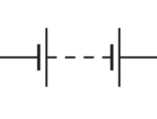
电池 Battery
输入 — 电源
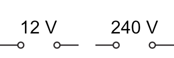
电压轨 Voltage Rails
5V（上），0V（下）

电源装置 Power Supply Units
(12 V, 240 V)
输入元件 — 开关 Input components — switches
开关控制电流能否在电路中流动。在系统方法中，开关属于输入装置（input devices） — 由人（或机械装置）操作，向电路的其余部分发送信号。
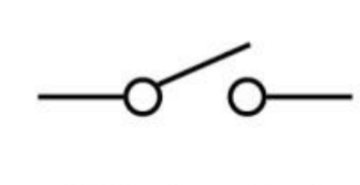
SPST 开关
单刀单掷 Single Pole Single Throw
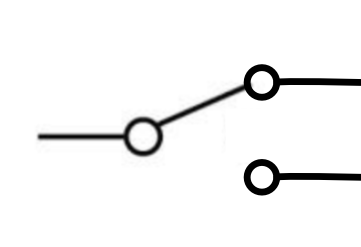
SPDT 开关
单刀双掷 Single Pole Double Throw
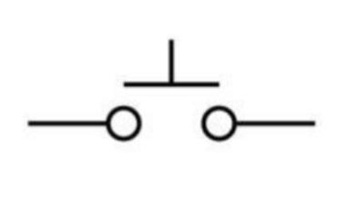
按钮开关 Push switch
按下接通 Push-to-make
输出装置 Output devices
输出装置把电能转换成有用的东西。它们位于系统的末端，对来自处理环节的信号作出响应。
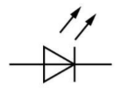
LED 发光二极管
输出 — 光
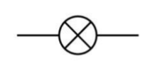
灯 Lamp
输出 — 光
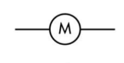
电动机 Motor
输出 — 运动
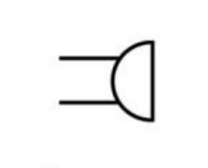
蜂鸣器 Buzzer
输出 — 声音
⚡ 打开 NoResistance 模拟器 使用上面列出的符号，搭建能完成以下任务的电路。每完成一个，把你的电路设计粘贴到下面的答题框中。
1. 当两个开关都闭合时，灯必须亮。这两个开关是串联（series）还是并联（parallel）？
答案
2. 当两个开关中任意一个被按下时，蜂鸣器必须响。这两个开关是串联还是并联？
答案
3. 开关在一个位置时，灯熄灭、电动机转动；开关在另一个位置时，灯亮、电动机停止。描述你的电路设计。你需要哪种类型的开关？
答案
4. 灯一直亮着。按下开关时，蜂鸣器响。请使用按下接通（push-to-make）开关搭建这个电路。
答案
5. 必须能在两个不同的地方开关同一盏灯 — 例如楼上和楼下。每个开关都必须能独立工作。搭建这个电路。（提示：楼梯灯就是这样工作的。）
答案
6. 搭建两个独立的电路，每个电路有四盏灯 — 一个采用串联，一个采用并联 — 每个电路由一个开关控制。如果其中一盏灯坏了，哪种连接方式更可靠？解释原因。
答案
下面凡是要求你画图或画草图的题目，可以在答题框中用文字清楚描述符号，也可以画在纸上 / 练习本上给老师看。
1. 画出以下元件的电路符号：a) 灯，b) 电动机，c) 蜂鸣器。
答案
2. 一个电路由电池、开关和灯串联组成。描述开关闭合时会发生什么，答案中要用到输入（input）、处理（process）和输出（output）这几个术语。
答案
3. 为什么我们使用电路符号，而不是元件的图片？想一想来自不同国家的工程师、技术员和制造商合作完成同一个设计的情况。
答案
第3节：欧姆定律 Ohm's Law
从你的探究中，你会发现电压加倍，流过电阻器的电流也加倍。这一关系称为欧姆定律（Ohm's Law）：
你可以变换这个公式，求出三个量中的任何一个。VIR 三角形是一个很有用的记忆方法：
遮住你要求的量 — 剩下的两个量就告诉你如何计算它。
So:
运用欧姆定律 — 例题 Worked examples
例题1 — 求电流
一个 6 V 电池连接到一个 300 Ω 的电阻器上。计算电流。
例题2 — 求电阻
一盏灯两端的电压为 9 V，流过的电流为 45 mA。计算它的电阻。
1
把 mA 换算成 A： 45 mA = 0.045 A
3
代入并计算： R = 90.045 = 200 Ω
第1a–1d题的通用电路：电源电压 V 加在一个电阻 R 两端。
1a) 一个 1 kΩ 电阻器两端的电压为 9 V。计算电流（单位：mA）。
答案
1b) 一个元件两端电压为 12 V，流过的电流为 60 mA。求它的电阻。
答案
1c) 一个 470 Ω 电阻器中流过 25 mA 的电流。计算它两端的电压。
答案
1d) 一个电路使用 6 V 电池，电流为 30 mA。计算总电阻。
答案
⚡ 用 NoResistance 模拟器检查你的答案。
第4节：串联电阻 Resistors in Series
当电阻器一个接一个地连接（串联）时，它们的电阻相加：
这是因为电流必须流过每一个电阻器，所以每个电阻器都会增加总的阻碍作用。
串联电路：R1、R2 和 R3 一个接一个，由一个 9 V 电源供电。
例题 — 串联电阻
三个电阻器串联：100 Ω、220 Ω 和 330 Ω。电源电压为 9 V。求总电阻和电路电流。
1
总电阻： RT = 100 + 220 + 330 = 650 Ω
2
电路电流： I = VR = 9650 = 13.8 mA
3
100 Ω 电阻器两端的电压： V = I × R = 0.0138 × 100 = 1.38 V
下面已加载一个串联电路，包含三个电阻器（100 Ω、220 Ω 和 330 Ω — 与上面例题的数值相同）、一个电压表和一个电流表。用电压表检查每个电阻器两端的电压，并用电流表确认电路电流与你的计算结果一致。试着把电流表移到不同位置，确认各处的电流都相同。
第1题：两个电阻器串联接在 9 V 电源上。
1. 两个电阻器（150 Ω 和 270 Ω）串联接在 9 V 电源上。计算：
a) 总电阻
答案
b) 电路电流
答案
c) 每个电阻器上的电压降
答案
2. 三个电阻器（15 Ω、24 Ω 和 60 Ω）串联接在 9 V 电源上。计算：
a) 总电阻
答案
b) 电路电流
答案
c) 60 Ω 电阻器上的电压降
答案
第3题：25 Ω 电阻器两端的电压为 4 V — 求电源电压 Vs。
3. 两个电阻器串联：25 Ω 和 75 Ω。25 Ω 电阻器两端的电压为 4 V。求电路电流和电源电压。
答案
⚡ 在模拟器中搭建这些电路，检查你的答案。
第5节：电压降与电流节点 Voltage Drops and Current Junctions
⚡ 打开 NoResistance 模拟器 搭建以下电路：一个 9 V 电池、一个 1 kΩ 电阻器和一个 470 Ω 电阻器串联。在每个元件两端接一个电压表，并串联接入一个电流表。
每个电压表位于电路上方，两根引线从电阻器两侧向外绕开再接回主电路；电流表串联在底部导线的中间。
1. 记录每个元件两端的电压。
| 元件 | 电压（V） |
|---|
| 电池 Battery | 9 V （已给出） |
| 1 kΩ 电阻器 | |
| 470 Ω 电阻器 | |
| 合计（R1 + R2） | |
2. 两个电阻器两端的总电压与电池电压相比，你发现了什么？
答案
3. 把电流表移到串联电路中的不同位置。你发现各处的电流有什么特点？
答案
串联电路中的电压降 Voltage drops in a series circuit
串联电路中的电压遵循一条重要规律：
- 电压规律（Voltage rule）：任何闭合回路中各部分电压降之和等于电源电压。
Vs = V1 + V2 — 回路中各电压降相加总是等于电源电压。
📖 这条规律是基尔霍夫定律（Kirchhoff's Laws）的一部分（以德国物理学家古斯塔夫·基尔霍夫命名）。
考试中你不需要记住他的名字 — 只要记住规律本身。
在串联电路中：各处电流相同，各部分电压相加等于电源电压。
一个串联电路的电源电压为 12 V，电流为 20 mA。其中一个电阻器为 220 Ω。运用电压规律，求第二个电阻器的阻值。
答案
第6节：并联电路 Parallel Circuits
什么是并联电路？
在并联电路中，电流有不止一条路径可以流动。在下图这样的电路中，每条支路都得到全部电源电压 — 更普遍地说，并联的两个元件两端的电压总是相同的，即使它们处在一个串并联混合的较大电路中也是如此。常见的例子是教室里的照明 — 每盏灯都有自己的开关，互不影响地独立工作。
三个电阻器并联。9 V 电源电压“降落”在每个电阻器两端。
在并联电路中：每条支路都得到全部电源电压，各支路电流相加等于总电流。并联的两个元件两端的电压总是相同的。
📖 这就是基尔霍夫电流规律（Kirchhoff's Current Rule）：流入节点的电流等于流出节点的电流。结合第5节的电压规律，这两条定律适用于你将来分析的每一个电路。
并联电阻 Resistors in parallel
当电阻器并联时，总电阻比其中任何一个电阻器都小。这是因为电流有更多的路径可以流动。
通用公式（适用于任意数量的电阻器）：
特殊情况：两个电阻器并联（最常见的情况）：
例题1 — 两个电阻器并联（完整解答）
R1 = 270 Ω，R2 = 100 Ω，电源电压 = 9 V。求总电阻、电路电流以及每条支路中的电流。
1
总电阻（积除以和）： RT = 270 × 100270 + 100 = 27 000370 = 73 Ω
2
电路（总）电流： IT = VRT = 973 = 123 mA
3
流过 R1 的电流： I1 = VR1 = 9270 = 33 mA
4
流过 R2 的电流： I2 = VR2 = 9100 = 90 mA
5
检验： I1 + I2 = 33 + 90 = 123 mA — 与 IT 相符。✓
例题2 — 三个电阻器并联
R1 = 220 Ω，R2 = 100 Ω，R3 = 330 Ω，电源 = 9 V。求总电阻。
1
使用通用公式： 1RT = 1220 + 1100 + 1330
2
1RT = 0.00455 + 0.01 + 0.00303 = 0.01758
4
电路电流： IT = 956.9 = 158 mA
下面已加载一个并联电路，有三盏灯，每盏灯都有自己的开关。点击每个开关，分别打开和关闭各盏灯 — 注意每盏灯都独立工作，而且每条支路两端都是全部电源电压。
1. 一个 10 Ω 和一个 14 Ω 电阻器并联接在 6 V 电源上。计算：
a) 总电阻
答案
b) 电路电流
答案
c) 流过每个电阻器的电流
答案
2. 一个 660 Ω 和一个 470 Ω 电阻器并联，电源电压为 9 V。计算总电阻、电路电流以及每条支路中的电流。验证各支路电流之和等于总电流。
答案
3. 一个 440 Ω 电阻器与一个 330 Ω 电阻器并联。流过 440 Ω 电阻器的电流为 300 mA。求流过 330 Ω 电阻器的电流。
答案
4. 一个 6 Ω 和一个 75 Ω 电阻器并联接在 12 V 电源上。计算电路总电流。
答案
5. 对于下面的电路，计算 a) 总电阻，b) 电池输出的电流，c) 每条支路中的电流。
R1 = 100 Ω，R2 = 150 Ω，R3 = 300 Ω，全部并联接在 12 V 电源上。
答案
⚡ 在模拟器中搭建这些电路，检查你的答案。
第7节：串并联混合电路 Combined Series and Parallel Circuits
实际电路中往往既有串联又有并联。要求解这类电路，必须一步一步地化简：
R1（蓝色）与 R2 和 R3（绿色）串联，而 R2 和 R3 彼此并联 — 数值与下面例题相同。
- 先求并联部分的总电阻（记作 RP）。
- 把 RP 与串联的电阻器相加，得到总电阻 RT。
- 用欧姆定律求电路电流。
- 用电压规律和电流规律求各部分的电压和电流。
例题 — 串并联电路
R1 = 100 Ω，与由 R2 = 300 Ω 和 R3 = 150 Ω 组成的并联部分串联。电源 = 9 V。
1
并联部分： RP = 300 × 150300 + 150 = 45 000450 = 100 Ω
2
总电阻： RT = R1 + RP = 100 + 100 = 200 Ω
3
电路电流： IC = VRT = 9200 = 45 mA
4
R1 两端的电压： VR1 = 0.045 × 100 = 4.5 V
5
并联部分两端的电压（电压规律）：VP = 9 − 4.5 = 4.5 V
6
流过 R2 的电流： I2 = 4.5300 = 15 mA
7
流过 R3 的电流： I3 = 4.5150 = 30 mA
8
检验： I2 + I3 = 15 + 30 = 45 mA — 与 IC 相符。✓
第1题：1 kΩ 电阻器与并联的一对电阻器串联 — 这对并联电阻器两端共用同一个电压，而不是全部的 9 V。
1. 一个 1 kΩ 电阻器与两个并联的电阻器（都是 500 Ω）串联，接在 9 V 电源上。计算：
a) 总电阻
答案
b) 电路电流
答案
c) 1 kΩ 电阻器两端的电压
答案
d) 流过每个 500 Ω 电阻器的电流
答案
2. 一个 1 kΩ 电阻器与两个并联的电阻器（都是 1 kΩ）串联，接在 12 V 电源上。求总电阻、电路电流、串联电阻器两端的电压，以及流过每个并联电阻器的电流。
答案
3. 一个 10 kΩ 电阻器与由 500 Ω 和 1 kΩ 组成的并联部分串联，接在 9 V 电源上。求 a) 总电阻，b) 电路电流，c) 10 kΩ 电阻器两端的电压，d) 流过 500 Ω 电阻器的电流。
答案
第8节：分压器 Voltage Dividers
分压器（voltage divider）是由两个（或更多）电阻器串联接在电源上，并从它们之间的中点引出输出连接而构成的。在串联电路中，每个电阻器分得电源电压的一部分 — 电阻越大，分得的电压就越多。
| 标注 | 含义 |
|---|
| Vs | 电源电压 — 等于 V1 + V2 |
| R1 | 上方电阻器（或元件） |
| R2 | 下方电阻器（或元件） |
| V1 | 从 Vs 到输出连接点的电压 |
| V2 / Vout | 从输出点到 0V 的电压 — 这就是有用的输出 |
| RT | 总电阻 = R1 + R2 |
| 0V | 电源的接地端 / 负极 |
计算 Vout Calculating Vout
求 Vout（V2）有两种方法，取决于你已经知道什么：
你也可以用基尔霍夫电压定律（Kirchhoff's Voltage Law）求 V1：Vs = V1 + V2，所以 V1 = Vs − V2。
传感元件与换能器 Sensor components and transducers
在工程科学中，我们主要使用三种会随环境变化（热、光或位置的变化）而改变电阻的元件，它们非常适合用在分压器传感电路中。
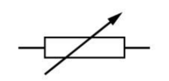
可变电阻器 Variable Resistor
位置变化会改变它的电阻
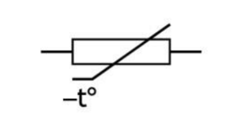
热敏电阻 Thermistor
温度变化会改变它的电阻
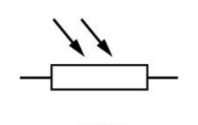
LDR 光敏电阻
（Light Dependent Resistor，光敏电阻）光照强度变化会改变它的电阻
💡 换能器（Transducers）把能量从一种形式转换成另一种形式。输入换能器（Input transducers）（使用 LDR 的光传感器；使用热敏电阻的温度传感器）把物理条件转换成电信号。输出换能器（Output transducers）（灯、电动机、蜂鸣器）把电能转换回光、运动或声音。
通常，把热敏电阻或 LDR 与一个固定电阻器串联，组成分压器。输出取自固定电阻器两端（或传感器两端，取决于你希望条件变化时电压上升还是下降）。
从图表中读取电阻值 Reading resistance values from graphs
电子工程师在设计电路时，需要知道热敏电阻和 LDR 在温度和光照变化时阻值会变化多少。为此，制造商会公布特性曲线图，显示它们的电阻如何随条件变化。这些图的读法与你平常见到的图表略有不同。
LDR 特性曲线图 — ORP12
LDR 在黑暗中电阻很大，在强光下电阻很小。下图显示 ORP12 型 LDR 的电阻如何随光照强度变化。两条坐标轴都是对数刻度。
LDR：光照增强时电阻下降。y 轴单位是 kΩ — 计算前记得换算成 Ω。
如何读 LDR 曲线图
- 在 x 轴上找到你的光照强度值（单位：lux 勒克斯）。
- 从该点向上画一条竖线，直到与深色曲线相交。
- 向左画一条水平线到 y 轴，读出电阻值（单位：kΩ）。
- 如有需要，换算成 Ω（乘以 1 000）。
在几个典型光照水平下，从 ORP12 曲线图读出的数值：
| 光照水平 | 照度（lux） | LDR 电阻（从图中读出） |
|---|
| 很暗的房间 | 10 | ~10 kΩ (10 000 Ω) |
| 较暗的房间 | 100 | ~1.2 kΩ (1 200 Ω) |
| 明亮的房间 | 1 000 | ~170 Ω |
| 强烈阳光 | 10 000 | ~25 Ω |
热敏电阻特性曲线图 Thermistor characteristic graph
NTC（负温度系数，Negative Temperature Coefficient）热敏电阻冷时电阻大，热时电阻小。下图显示六种不同型号的热敏电阻（曲线1–6）。除非另有说明，本节所有题目都使用曲线3。
NTC 热敏电阻：温度升高时电阻下降。热 → 电阻小。冷 → 电阻大。
如何读热敏电阻曲线图
- 在图上找到曲线3（编号标在曲线的右端）。
- 在 x 轴上找到你的温度值。
- 向上画一条竖线到曲线3，再向左画一条水平线到 y 轴。
- 读出电阻值。注意 y 轴使用 k 和 M 前缀 — 要换算成 Ω。
在几个典型温度下，从曲线3读出的数值：
| 温度（°C） | 热敏电阻的电阻（曲线3） |
|---|
| 0 | ~31 kΩ (31 000 Ω) |
| 25 | ~10 kΩ (10 000 Ω) |
| 50 | ~4 kΩ (4 000 Ω) |
| 75 | ~1.7 kΩ (1 700 Ω) |
| 100 | ~800 Ω |
下面已加载一个 LDR 分压器电路。LDR 处于下方位置，电压表测量它两端的 Vout。点击 LDR，用滑块调节光照强度 — 观察电压表读数如何变化。
在分压器计算中使用图表数值 Using a graph value in a voltage divider calculation
步骤总是一样的：先从图中读出电阻值，然后像对待任何固定电阻器一样，把它代入分压器公式。
例题1 — LDR 分压器（从图中读数）
一个电路使用 9 V 电源，上方为固定电阻器 R1 = 10 kΩ，下方 R2 为 ORP12 型 LDR。测量 LDR 两端的 Vout。求光照强度为 100 lux 时的 Vout。
1
从图中读数：在 100 lux 时，ORP12 的电阻 ≈ 1.2 kΩ = 1 200 Ω
2
总电阻： RT = 10 000 + 1 200 = 11 200 Ω
3
分压器公式： Vout = Vs × RLDRRT
4
Vout = 9 × 1 20011 200 = 0.96 V
例题2 — 强烈阳光下的 LDR
同一个电路。求强烈阳光下（10 000 lux）LDR 两端的 Vout。
1
从图中读数：在 10 000 lux 时，电阻 ≈ 25 Ω
2
RT = 10 000 + 25 = 10 025 Ω
3
Vout = 9 × 2510 025 = 0.022 V — 非常小，因为 LDR 的电阻非常小，只分得极少一部分电压。
例题3 — 热敏电阻分压器（从图中读数）
一个 9 V 电路中，上方电阻器（R1）为热敏电阻（曲线3），下方为固定电阻器 R2 = 10 kΩ。Vout 取自固定电阻器两端。求 25°C 和 100°C 时的 Vout。
1
在 25°C 时：读曲线3 → 电阻 ≈ 10 kΩ = 10 000 Ω
2
RT = 10 000 + 10 000 = 20 000 Ω Vout = 9 × 10 00020 000 = 4.5 V
3
在 100°C 时：读曲线3 → 电阻 ≈ 800 Ω
4
RT = 800 + 10 000 = 10 800 Ω Vout = 9 × 10 00010 800 = 8.33 V
5
结论：温度升高时，热敏电阻的电阻下降，因此它分得的电压变少 — 固定电阻器两端的 Vout 上升。
使用上面的 ORP12 LDR 曲线图和热敏电阻曲线图（曲线3）回答这些问题。每道计算题都要清楚写出：从图中读出的电阻值、RT 和 Vout。
1. 用 LDR 曲线图读出 ORP12 在下列光照强度下的电阻，并记录在表中。
| 光照强度（lux） | LDR 电阻（从图中读出） |
|---|
| 10 | |
| 100 | |
| 1 000 | |
| 10 000 | |
2. 在一个分压器中，ORP12 LDR 是下方电阻器（R2），上方是 10 kΩ 固定电阻器（R1），电源为 9 V。测量 LDR 两端的 Vout。用你在第1题中的读数，计算每个光照水平下的 Vout。
| 光照强度 | LDR 电阻（从图中读出） | RT | LDR 两端的 Vout |
|---|
| 10 lux | | | |
| 1 000 lux | | | |
3. 描述光线变亮时 LDR 两端的 Vout 如何变化。结合曲线图和你对分压器的理解解释原因。
答案
4. 用热敏电阻曲线图（曲线3）读出下列各温度下的电阻。
| 温度（°C） | 热敏电阻的电阻（从曲线3读出） |
|---|
| 0 | |
| 25 | |
| 75 | |
| 100 | |
5. 在一个分压器中，热敏电阻（曲线3）是上方电阻器，下方是 10 kΩ 固定电阻器，电源为 9 V。测量固定电阻器两端的 Vout。用你在第4题中的读数，计算 0°C 和 100°C 时的 Vout。
答案
6. 一位设计师需要在 ORP12 LDR 受到 1 000 lux 光照时，从 9 V 电源得到 Vout = 6 V。Vout 取自固定电阻器（下方位置）两端。用曲线图求出 1 000 lux 时 LDR 的电阻，再计算所需固定电阻器的阻值。写出全部计算过程。
答案
输出电压告诉我们什么？
在这种接法中，LDR 是下方电阻器，测量的是它两端的 Vout。光照增强时，LDR 的电阻下降。由于它在总电阻中所占的比例变小，它分得的电源电压也变少 — 所以光线变亮时 Vout 下降。
反过来，光线变暗时，LDR 的电阻上升，分得更多的电压，Vout 上升。因此这个电路在黑暗中产生高输出电压 — 这就是它常被称为暗传感器（dark sensor）的原因。
LDR 在下方：黑暗时 Vout 高，明亮时低 — 暗传感器。
LDR 在上方：明亮时 Vout 高，黑暗时低 — 光传感器。
1. 用上面的模拟器，记录三种不同光照水平下的 Vout，并描述变化趋势。
2. 现在在模拟器中重新搭建电路，把 LDR 和固定电阻器的位置对调（LDR 在上，固定电阻器在下，电压表接在固定电阻器两端）。记录相同三种光照水平下的 Vout。
| 光照水平 | Vout（V）— LDR 在上方 |
|---|
| 暗 | |
| 中等 | |
| 亮 | |
3. 在第二个电路（LDR 在上方）中，明亮时 Vout 高，黑暗时低。这种接法常被称为光传感器（light sensor）。解释为什么第一个电路（LDR 在下方）通常被称为暗传感器（dark sensor）。
答案
4. 一位设计师想让路灯在天黑时自动打开。分压器应该采用光传感器接法还是暗传感器接法？解释你的理由。
答案
在这个探究中，你将研究传感器分压器的输出电压如何取决于 (a) 传感器的电阻，以及 (b) 元件的摆放顺序。使用上面的模拟器。Vout 总是测量分压器中点与 0 V（接地）之间的电压 — 即中间连线上的电压。
A部分 — 电阻对 Vout 的影响
设置：LDR 在上方位置，10 kΩ 固定电阻器在下方位置。测量固定电阻器（下方元件）两端的 Vout。
1. 把 LDR 的光照从暗调到亮。记录每种条件下的 Vout。
| 光照条件 | LDR 电阻（约值） | Vout（下方电阻器两端） |
|---|
| 很暗 | | |
| 昏暗 | | |
| 亮 | | |
2. 光线变暗时，LDR 的电阻增大。下方（固定）电阻器两端的 Vout 会怎样变化？用“分压”的概念解释。
答案
B部分 — 对调元件位置的影响
现在对调：把固定电阻器放在上方，LDR 放在下方。现在测量 LDR 两端的 Vout。
3. 在相同的三种光照条件下重复测量。
| 光照条件 | LDR 电阻（约值） | Vout（下方 LDR 两端） |
|---|
| 很暗 | | |
| 昏暗 | | |
| 亮 | | |
4. 比较 A 部分和 B 部分的结果。Vout 对光照变化的响应有什么关键区别？哪种接法在黑暗中得到更高的 Vout？
答案
5. 一位设计师希望温度高时 Vout 也高。热敏电阻应该放在上方还是下方？解释你的理由。
答案
关键结论：传感器分压器产生的电压会随条件变化 — 但单靠一个变化的电压无法开关电动机或灯。我们需要一种元件，能利用传感器电路中的小电压，去控制另一个独立输出电路中大得多的电流。这种元件就是晶体管（transistor）。
1. 一个分压器中 R1 = 200 Ω，R2 = 600 Ω，电源为 12 V。计算每个电阻器两端的电压。
答案
2. 一个分压器中 R1 = 1.2 kΩ，R2 = 2.4 kΩ，电源为 9 V。计算 1.2 kΩ 电阻器两端的电压。
答案
3. 一个分压器接在 12 V 电源上，R2 两端得到 4 V。如果 R2 = 300 Ω，计算 R1。
答案
4. 一个热敏电阻与 10 kΩ 固定电阻器组成分压器，电源为 9 V。在 80°C 时热敏电阻的电阻为 500 Ω；在 20°C 时为 10 kΩ。
a) 计算 80°C 时固定电阻器两端的 Vout。
答案
b) 计算 20°C 时固定电阻器两端的 Vout。
答案
c) 温度升高时，热敏电阻两端的电压如何变化？解释原因。
答案
5. 要求一个分压器在热敏电阻于 100°C 时电阻为 2 kΩ 的情况下，从 9 V 电源得到 Vout = 4.5 V。计算合适的固定电阻器阻值。说明温度下降时 Vout 会升高还是降低，并解释你的答案。
答案
第9节：晶体管 Transistors
为什么需要晶体管？
你已经看到，传感器分压器产生的电压会随条件变化 — 在黑暗中升高、在光亮中降低，或随温度升高而升高。但单靠这个变化的电压无法开关电动机、蜂鸣器或灯。这些输出装置所需的电流大得多，是微小的传感器电路无法提供的。
我们需要一种元件，能利用传感器电路中的小电压（和极小的电流），去控制另一个完全独立的输出电路中大得多的电流。这种元件就是晶体管。
💡 水龙头类比：想象一个水龙头。把把手轻轻一拧（很小的基极电流），就能让大量的水流过水管（很大的集电极电流）。晶体管的工作原理相同 — 基极上的一个小信号控制集电极和发射极之间大得多的电流。这里的关键元件是晶体管，而不是继电器 — 晶体管是一种封装在小小外壳里的固态（没有活动部件）电子开关。
什么是晶体管？
N5 工程科学中使用的是 NPN 双极结型晶体管（NPN Bipolar Junction Transistor，BJT）。它是一种固态半导体器件 — 没有活动部件，每秒可以开关数百万次。它有三个引脚：
NPN 晶体管
B = 基极（Base），C = 集电极（Collector），E = 发射极（Emitter）
- 基极 Base（B） — 控制输入端。连接到传感器分压器的输出。当 VB 升高到约 0.7 V 以上时，晶体管导通（开）。
- 集电极 Collector（C） — 通过输出装置（灯、电动机、继电器线圈等）连接到电源正极。
- 发射极 Emitter（E） — 连接到 0 V（接地）。电流从这里流出。
晶体管如何开关 How the transistor switches
| 基极电压（VB） | 晶体管状态 | 集电极–发射极通路 | 输出装置 |
|---|
| 低于约 0.7 V | 关 OFF | 断路 — 没有电流流过 | 关 |
| 高于约 0.7 V | ON | 接通 — 大电流顺畅流过 | On |
⚠️ 在 N5 阶段，我们把晶体管当作一个简单的开/关开关。实际上，随着基极电压升高，晶体管是逐渐导通的 — 这种放大特性超出了本课程的范围。
完整的晶体管开关电路 The complete transistor switching circuit
晶体管开关电路有两个独立的回路：
- 输入（基极）电路：即传感器分压器。条件变化时，分压器的 Vout 升高到 0.7 V 以上，使晶体管导通。
- 输出（集电极）电路：输出装置位于电源正极和集电极之间。晶体管导通时，电流流过该装置。
这两个电路只在发射极处共用 0 V 连接。这种分隔意味着输出电路可以在比脆弱的传感器电路大得多的电流下工作 — 晶体管在两者之间起到桥梁作用。
下面的模拟器显示一个由 LDR 分压器控制的晶体管开关电路。调节光照强度并观察：(1) 基极电压如何变化，(2) 晶体管恰好在哪一点导通，以及 (3) 输出装置会发生什么。
需要保护二极管 The need for a protective diode
二极管（diode）只允许电流单向流动。它的两个端子是阳极 anode（A，+）和阴极 cathode（c，−）。只有当阳极电压高于阴极时，电流才会流动。
如果输出装置是继电器线圈、电动机、电磁铁（solenoid）或蜂鸣器，就存在一个隐藏的危险。这些装置内部都有线圈。当晶体管把电流切断时，线圈内部的磁场会迅速消失。这会产生一个方向相反的很大的电压尖峰 — 有时高达数百伏，只持续不到一毫秒。
这称为反电动势（back e.m.f.，back electromotive force）。它会沿集电极引脚反向传回，可能永久损坏晶体管。
每当晶体管驱动带线圈的装置（继电器、电动机、电磁铁、蜂鸣器）时，必须在该装置两端反向并联一个保护二极管（protective diode），用来吸收反电动势尖峰。
二极管分两个阶段工作：
- 晶体管导通（ON）时：电流正常流过线圈。二极管处于反向偏置 — 它阻断电流，不起作用。
- 晶体管截止（OFF）时：反电动势试图推动电流反向流动。此时二极管处于正向偏置，它导通，为线圈提供一条安全的环形通路，把能量以极少量热的形式无害地消耗掉。晶体管根本不会受到尖峰的冲击。
两个相同的电路并排显示。左边的电路由晶体管驱动电动机，没有保护二极管。右边的电路设置相同，但电动机两端并联了二极管。调节每一边的 LDR 来开关晶体管 — 观察电压表读数，比较晶体管截止时集电极处发生的情况。
在模拟器中搭建一个光感晶体管电路。使用 9 V 电源；用 LDR 与 10 kΩ 固定电阻器串联作为分压器（基极电路）；用 LED 与 470 Ω 电阻器串联作为输出（集电极电路）。
1a. 调节 LDR 的光照强度。描述在明亮和黑暗条件下 LED 会发生什么。
答案
1b. 用电压表测量晶体管基极的电压。晶体管在多大电压时导通？
答案
2. 用热敏电阻替换 LDR。描述改变温度时会发生什么。LED 是在变热时还是变冷时点亮？哪种元件位置（分压器的上方或下方）会产生这种效果？
答案
3. 用继电器线圈替换 LED，并在线圈两端加一个保护二极管。用你自己的话解释为什么需要这个二极管，以及没有它时晶体管会怎样。
答案
为下列功能设计晶体管开关电路。画出每个电路的草图，并解释你选择元件的理由。你可以在模拟器中搭建设计并粘贴到答题框中，也可以用文字清楚描述，或者画在纸上给老师看。
2. 天冷时电磁铁（solenoid）通电动作。设计中要包含一个保护二极管。清楚标出二极管的位置，并解释为什么需要它。
答案
第10节：继电器 Relays
为什么使用继电器？
许多输出装置 — 例如工业机械中的电动机或使用市电的加热器 — 需要的电压和电流远远超过低功率电子电路能够安全提供的范围。继电器（relay）就是两者之间的桥梁：一个小的控制电流使一个由磁力操作的触点动作，从而控制大功率电路。
继电器如何工作 How the relay works
当电流流过继电器的线圈（coil）时，线圈变成一个电磁铁（electromagnet）。它吸引一块叫做衔铁（armature）的可动金属片，衔铁移动并使开关触点闭合（或断开）。电流停止时，弹簧把衔铁拉回原位。
继电器利用线圈中的小电流，去开关另一个完全独立的输出电路中大得多的电流 — 两个电路之间没有任何电气连接。
下面的电路是一个5 V 微控制器式电路，利用晶体管和继电器来开关一台230 V 市电加热器。调节可变电阻器来改变基极电压，观察晶体管如何控制继电器，继电器又如何开关市电加热器 — 两个电路之间完全电气隔离。
1. 用你自己的话解释，为什么需要用继电器把 5 V 控制电路与 230 V 市电加热器连接起来。为什么晶体管不能直接完成这项工作？
答案
2. 观察模拟器中的电路，继电器线圈两端没有接保护二极管。为什么这会使晶体管容易损坏？你会加什么来保护它？
答案
3. 在模拟器中调节可变电阻器，使加热器打开。描述你在控制电路和市电电路中观察到的现象。
答案
4. 给出两个理由，说明为什么把市电加热器直接接到晶体管输出端、而不使用继电器是危险的。
答案
5. 这个电路中的继电器是 SPDT 型（单刀双掷）。它有一个常开（NO）触点和一个常闭（NC）触点。描述如何利用 NC 触点设计一个电路，使晶体管导通时加热器关闭。这在什么时候会有用？
答案
第11节：设计挑战 Design Challenges
下面的挑战与你目前做过的任务不同。每个挑战都给你一个真实的情境和一份简短的书面规格要求（specification）— 很像真正的工程任务书 — 而不是只有一个正确答案的单一问题。你需要设计一个满足规格要求的电路，搭建或模拟它，测试它，并评价它的实际表现。
如何着手：开始之前先读完整份规格要求。想清楚课程笔记中哪些部分与之相关（分压器？串联/并联？继电器？），先做计算，再在模拟器中搭建和测试。你的评价应逐条对照规格要求中的编号要点 — 清楚说明每一条是否满足，以及满足的程度。
设计挑战1 — 爱丁堡跨年夜（Hogmanay）街道照明
一家承包商正在为跨年夜（Hogmanay，苏格兰的新年庆祝活动）在皇家一英里大道（Royal Mile）的一段路上安装临时装饰灯。这套灯饰使用一串小灯（这里用固定电阻器来模拟），由同一个电源供电。
| i | 电源电压：12 V |
|---|
| ii | 六盏相同的灯，每盏电阻为 60 Ω |
|---|
| iii | 六盏灯全部点亮时，电路总电流不得超过 1.5 A，以免超出延长线的额定值 |
|---|
| iv | 如果任何一盏灯损坏（断路），其余的灯必须保持点亮 |
|---|
a) 设计。考虑要求 (iv)，决定六盏灯应该串联还是并联，并说明理由。计算你所选接法在六盏灯都在时的总电阻和总电流，并确认它满足要求 (iii)。
答案
b) 搭建/模拟。在 NoResistance 模拟器中用 12 V 电源和六个 60 Ω 电阻器搭建你的电路。粘贴或描述你完成的电路。
答案
c) 测试。在模拟器中移除一盏灯，表示它损坏了。记录其余的灯和电路总电流发生了什么变化。
答案
d) 评价。一盏灯损坏后，你的设计还满足规格要求吗？提出一个切实可行的改进，使灯饰更安全或更可靠。
答案
设计挑战2 — 法夫（Fife）塑料大棚自动通风扇
一个社区菜园小组想保护他们的农作物不被高温损害，打算安装一台在塑料大棚（polytunnel）过热时自动启动的风扇。
| i | 电源电压：9 V |
|---|
| ii | 当大棚内温度达到约 30°C 时，风扇（一台电动机）应启动 |
|---|
| iii | 现有一个热敏电阻，在 30°C 时电阻为 4 kΩ |
|---|
| iv | 从 1 kΩ、2 kΩ、3.3 kΩ 或 4.7 kΩ 中选择一个固定电阻器。当晶体管基极处的 Vout 达到至少电源电压的一半（4.5 V）时，视为风扇启动 |
|---|
a) 设计。决定热敏电阻应放在分压器的上方还是下方，才能使 Vout 随温度升高而上升，并解释你的理由。然后计算四个备选固定电阻器各自在 30°C 时的 Vout，选出最接近恰好在 30°C 目标温度启动风扇的那一个（要求 iv）。写出全部计算过程。
答案
b) 搭建/模拟。用你选的电阻器在模拟器中搭建完整电路 — 分压器、晶体管和电动机。
答案
c) 测试。把模拟器中热敏电阻的数值从低温状态逐渐调到 30°C，记下风扇实际启动时的电阻值。
答案
d) 评价。实际启动点与 30°C 有多接近？提出一个切实可行的改进 — 例如，用可变电阻器代替固定电阻器，是否会使设计更适合实际安装？
答案
设计挑战3 — 自行车棚安全灯
一所学校想在自行车棚门上方安装一盏 LED 灯，在天色暗到影响安全时自动点亮，不需要任何人去按开关。
| i | 电源电压：6 V |
|---|
| ii | 现有一个 LDR：白天电阻约为 400 Ω，天色暗到影响安全时上升到约 8 kΩ |
|---|
| iii | 输出：一个红色 LED，点亮时电压降为 2 V，电流不得超过 20 mA |
|---|
| iv | 从 470 Ω、1 kΩ 或 2.2 kΩ 中为光感分压器选择一个固定电阻器。当晶体管基极处的 Vout 达到至少电源电压的一半（3 V）时，视为灯点亮；白天时它必须保持在这个值以下 |
|---|
a) 设计 — 传感器分压器。这里需要一个暗传感器。决定 LDR 在分压器中的位置，然后为三个备选固定电阻器分别计算白天和黑暗时的 Vout。选出在“明确关”和“明确开”之间留有最可靠余量的电阻器，并说明理由。
答案
b) 设计 — LED 限流电阻。计算使 LED 电流不超过 20 mA 所需的最小串联电阻，然后选择一个合适的标准阻值。
答案
c) 搭建/模拟并测试。搭建完整电路，把模拟的光照从亮调到暗。记下 LED 实际点亮时的光照水平。
答案
d) 评价。开关点与你的设计相符吗？提出一个切实可行的设计改进。
答案
设计挑战4 — 艾茅斯（Eyemouth）港口结冰警示灯
一个小渔港想在码头上安装一盏警示灯，当甲板冷到有结冰风险时自动点亮，在船员走出去之前提醒他们。
| i | 控制电路电源：9 V |
|---|
| ii | 输出：一盏 12 V 警示灯，通过继电器开关 |
|---|
| iii | 热敏电阻：在 3°C（结冰风险阈值）时电阻 ≈ 2 kΩ，在 15°C（温和的天气）时 ≈ 500 Ω |
|---|
| iv | 从 1 kΩ、2 kΩ 或 3.3 kΩ 中选择一个固定电阻器。警示灯在 3°C 及以下时必须亮（ON），在 15°C 时必须明确关闭（OFF），沿用前面挑战中相同的 4.5 V（电源电压一半）开关约定 |
|---|
| v | 要包含一个保护二极管，并能说明它为什么放在那个位置 |
|---|
a) 设计 — 传感器分压器。决定热敏电阻的位置，使天冷时 Vout 高。为三个备选固定电阻器分别计算 3°C 和 15°C 时的 Vout，选出最能满足要求 (iv) 的那一个。写出计算过程，包括不满足规格要求的选项及其原因。
答案
b) 设计 — 输出级。结合要求 (ii)，解释为什么这里需要继电器。然后解释你会把保护二极管放在哪里，以及为什么需要它。
答案
c) 搭建/模拟并测试。搭建完整电路 — 热敏电阻分压器、晶体管、继电器、二极管和灯 — 并把模拟温度在 3°C 和 15°C 之间变化。记录你的观察结果。
答案
d) 评价。你的设计满足规格要求的每一部分吗？把这个挑战与设计挑战3比较：为什么那个电路不需要继电器，而这个需要？
答案
💾 答案会自动保存在这台设备的浏览器中。
上次保存：从未